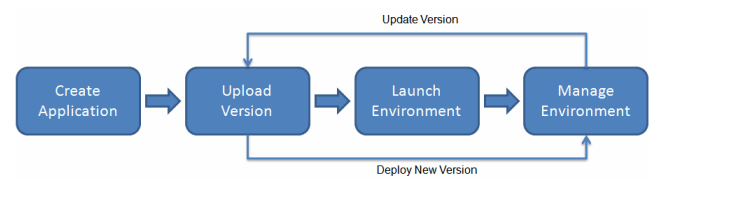

Amazon Web Services: Elastic Beanstalk

AWS Elastic Beanstalk is an easy-to-use service for deploying and scaling web applications and services. You can simply upload your code and Elastic Beanstalk automatically handles the deployment, from capacity provisioning, load balancing, auto-scaling to application health monitoring. At the same time, you retain full control over the AWS resources powering your application and can access the underlying resources at any time.
All the things we mentioned in past sections can be managed in one place and from a single web console. Besides, we can keep track of versioned deploys having the ability to rollback in any moment. Beanstalk also uses the concept of Environments which makes it perfect for a tipical pipeline such as 'development', 'staging', 'production'. These is a simplified version of how this service works.

You can obviously change the architecture configuration at any time and even define with just a few clicks how do you prefer the deploy process to happen. For example if shouldn't have downtime between new releases.
Find more information about Elastic Beanstalk here
Next Steps
This 5 sections were a very quick introduction to the AWS world. Certainly you'll find a vast amount of services solving the most common (and not so much) problems of software development. The AWS documentation is very detailed and extensive so you'll have more than enough to read about each topic of your interest.
Here you can found the resource links we choose for you to take a look in a more advanced approach for the things we discussed.